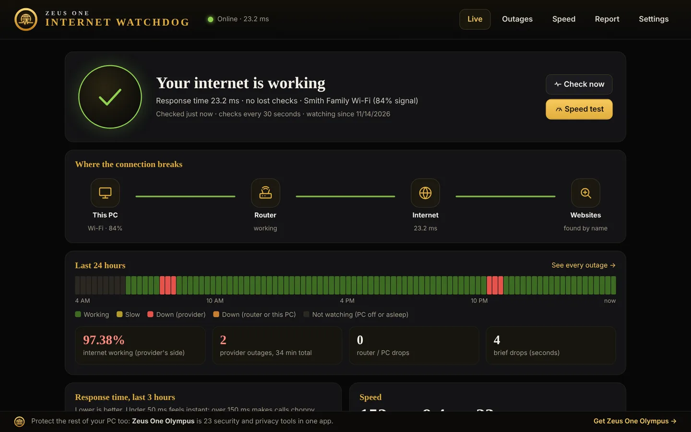
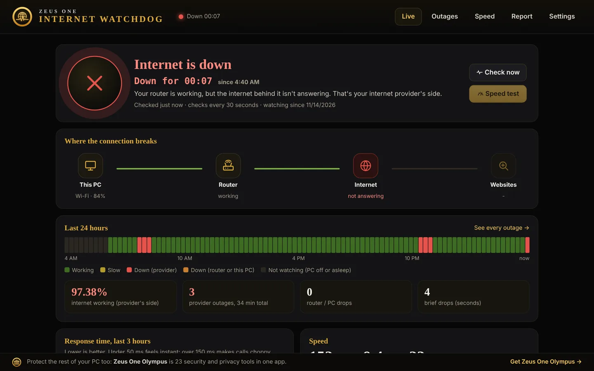
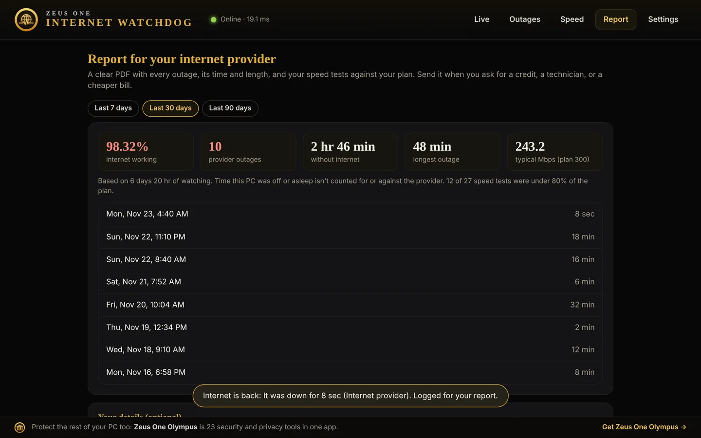

ZEUS ONE
ZEUS ONE
Your internet keeps dropping.
Now you can prove it.
Zeus One Internet Watchdog checks your connection every 30 seconds, all day. It logs every outage and slow speed, tells you whether it was your router or your internet provider, and turns it all into a report you can send them.
Get it on the Microsoft Store
What it does
Every check asks your router, big internet servers and the DNS server. If the router answers but the internet doesn't, it's the provider. If the router stops answering, it's your Wi-Fi or router.
Start, end and length of each outage, confirmed by a second check so a single hiccup doesn't count. Brief drops are counted separately.
Automatic speed tests through the day, charted against the speed on your bill. See exactly how often you get less than you pay for.
Hours when your PC was off or asleep aren't counted for or against anyone, so the numbers hold up when you call.

The report for your internet company
One click makes a clear PDF: how often the internet was working, every outage with its date, time and length, and your speed tests against your plan. Add your account number and send it when you ask for a credit, a technician, or a better price. Also exports a spreadsheet (CSV).

Free and Pro
| Free | Pro ($4.99 once) | |
|---|---|---|
| Live checks, outage alerts, speed tests | Yes | Yes |
| History on screen | Last 7 days | Everything (up to a year) |
| Report for your provider (PDF + spreadsheet) | Preview | Yes |
Everything is recorded from day one, so when you get Pro, your full history is already there.
Zeus One Olympus: antivirus command centre, password vault, firewall, privacy cleanup, backups and more, 23 tools in one app. Free to start, Pro $29.99 once.
See Olympus →
Privacy policy
Effective November 23, 2026 · ProfitHarbor AI LLC ("we"), maker of Zeus One Internet Watchdog ("the app").
The short version: everything the app records stays on your PC. Nothing is sent to us.
| When | What happens | Where |
|---|---|---|
| Every check (every 15-60 seconds, your choice) | The app sends tiny "ping" and connection checks to your router and to public servers run by Cloudflare (1.1.1.1), Google (8.8.8.8) and Quad9 (9.9.9.9), and asks your DNS server to look up a Microsoft test address. Like any internet connection, these servers see your public IP address. | Your router, those public servers, your DNS server |
| Speed tests (on a schedule you choose, or when you ask) | The app downloads and uploads test data to Cloudflare's public speed test service (speed.cloudflare.com), which sees your public IP address. A test can use a few hundred megabytes on a fast connection; you can turn automatic tests off. | Cloudflare |
| Buying Pro | The purchase is handled by the Microsoft Store. We never see your payment details. | Microsoft |
| You click a link in the app | Your browser or the Microsoft Store opens that page. | That website or the Microsoft Store |
What the app stores
On your PC only: the results of each check, outages, speed tests, your settings, and the account details you choose to type in for the report. Uninstalling the app removes them, and Settings › Clear history deletes them at any time.
What we collect
Nothing. We never receive your outage history, speed results, account details or any usage data. Reports you save are files on your PC; you decide who gets them. If you email us, we use your email only to reply.
Children
The app doesn't collect personal information from anyone, including children under 13.
Changes and contact
If this policy changes, we'll update this page and its date. Questions: support@profitharborai.com
© 2026 ProfitHarbor AI LLC · Zeus One Olympus · Scam Check · Drive Lock · Photo Vault · Wi-Fi Inspector · Subscription Finder · Debt Payoff Planner · Receipt & Warranty Keeper · Cash-Flow Forecaster